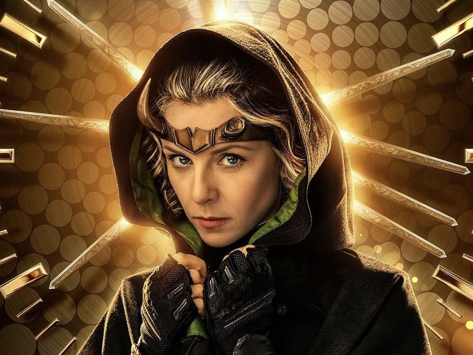
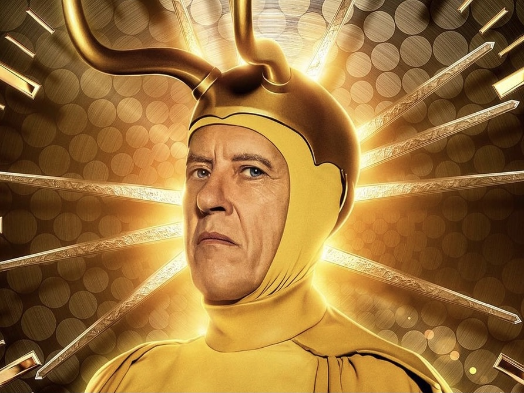
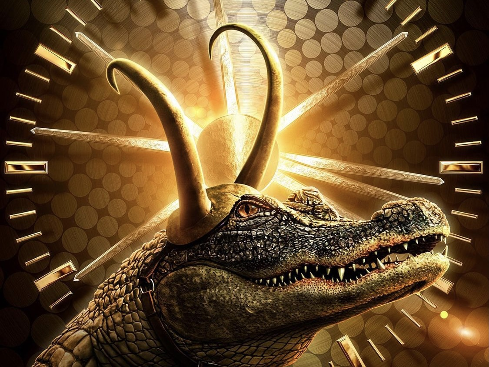
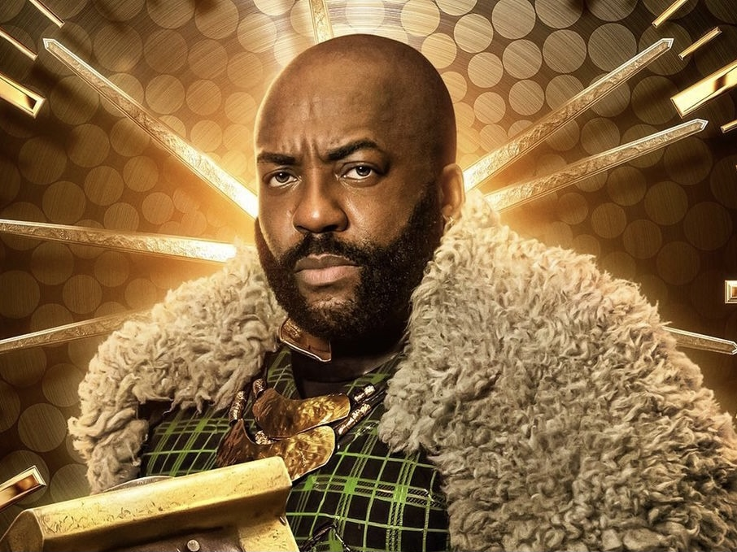
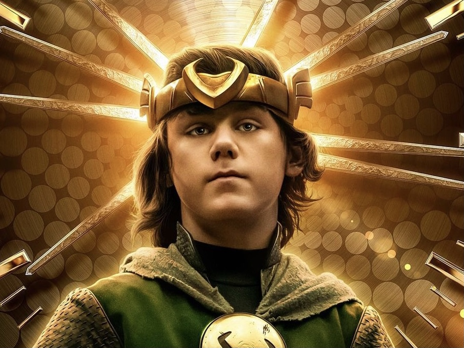

Loki

The Loki from our Universe, and the main villain from the First Avengers. A classic character we have all grown to love despite the problems he caused and issues he created, such as invading earth in the first avengers, posing as Odin in "Thor:Ragnorak", and, unfortunately, dying in "Avengers: Infinity War". Loki meets the rest of the characters listed in the TVA's "The Void".
Sylvie
The only female Loki that we see and the main antagonist in the tv show "Loki". Another character that, despite her wrong-doings, fans grew to love. Unfortunately, after the events at the end of Season One Loki, is nowehre to be seen. Hopefully she will reprise her roll in Season Two.
Classic Loki
An older version of Loki that our Loki meets in The Void. While first impressions may make him seem old and frail, he ends up saving Loki and Sylvie's life by using his immense power to create a whole image of Asgard, the home of Loki, Thor and Odin. Classic Loki unfortunately passes away after fighting the Void's demon, Alioth.
Gator Loki
There is not much to say about Alligator Loki, he is simply an Alligator that wears Loki's horned crown and a robe that is similar to what Loki wears in earlier Marvel movies.
Boastful Loki
Boastful Loki is also another extremely powerful version of Loki. In his Universe, Boastful Loki was able to gather all six infinity stones, another thing our Loki hoped to accomplish but never did.
Child Loki
Child Loki is exactly how he sounds, a young version of Loki. The biggest difference, is that young Loki did what our Loki could (thankfully) never do; he killed Thor. While this impresses all the other Lokis, we learn that Child Loki killing Thor is the reason he is in The Void in the first place.